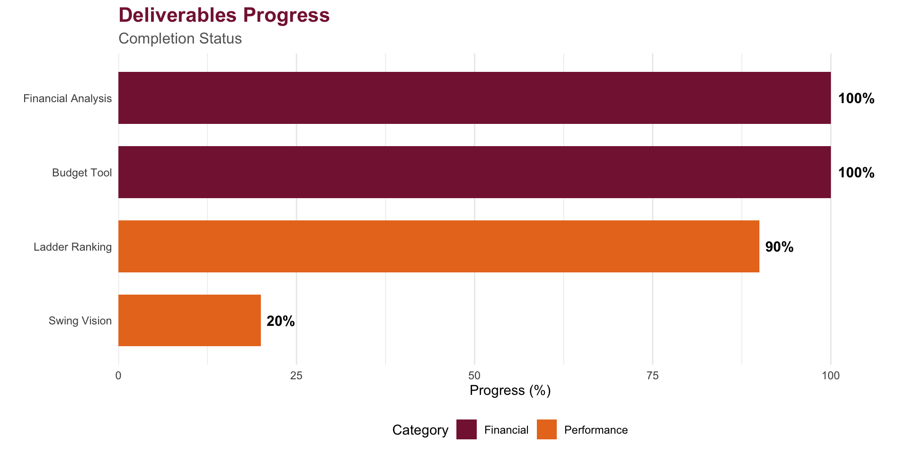

Communication Log
Meeting Notes & Progress Updates
This page documents our ongoing collaboration with VT Club Tennis, tracking meetings, decisions, and project milestones.
Project Timeline - Meeting Schedule
Progress Overview

Meeting 1 - September 30, 2024 (Monday)
Needs Assessment & Project Kickoff
Attendees
- Statistical Collaborators: Yusi Yao, Kempton Thacker, Caleb Bradbury, Parker Duffey
- VT Club Tennis Representatives: Mitchell Freeman, Emma Casazza
Methodologies Applied
- POWER Process: Used for collaborative meeting structure
- Prepare: Reviewed club background and potential needs beforehand
- Open: Established rapport and set meeting agenda
- Work: Explored client’s current challenges and goals
- End: Summarized key points and confirmed understanding
- Reflect: Team debriefed after meeting to clarify next steps
- QQQ Process: Applied problem-solving framework
- Question: What are the club’s primary statistical needs?
- Question: What data is currently available?
- Question: What are the desired outcomes?
- Active Listening: Focused on understanding client’s goals without interrupting
Meeting Minutes
Note: Transcripts extracted from Notion AI
Click to view conversation transcript
Kempton: “Thanks for meeting with us! We’re excited to share what we’ve been working on. We need to show you our progress for a class presentation update next Tuesday.”
Emma: “I’m free between 11-12:15 on Thursday. Does that work for everyone?”
Mitchell: “I have class at 11, but I’m free pretty much any other time. I can catch up with Emma after.”
Kempton: “Perfect! Emma, we’ll do 11-12:15 and then you can debrief Mitchell afterward. We’ll send you the presentation.”
Emma: “Also, have you guys heard back from procurement on SwingVision? And do you want the updated finance sheet so you have the most up to date data?”
Yusi: “Yes, please share the updated financial data. That would be really helpful for our analysis.”
Emma: “Great! I’ll also need a quick picture of the Zoom call for our presentation - it’s just a requirement.”
Caleb: “No problem! Everyone make sure to show up for at least the picture.”
Mitchell: “I do have class Thursday at 11, but I’m free after. Emma can just catch up with me after you all meet.”
Kempton: “Sounds good! We’ll make sure Emma has everything to share with you.”
Topics Discussed
- VT Club Tennis overview: membership, activities, and organizational structure
- Current financial challenges and lack of data-driven decision making
- Need for member performance tracking and ranking system
- Historical data availability (financial records, member rosters)
- Timeline expectations and meeting schedule
Client’s Initial Needs
- Updated financial data and budget planning tools
- SwingVision procurement status tracking
- Integration with existing finance sheets
- Class presentation materials and documentation
Decisions Made
- Meeting scheduled for 11-12:15 with Emma, Mitchell to catch up after
- Team will provide presentation materials before Tuesday class update
- Emma will share updated finance sheet for current data
- Zoom call photo required for presentation requirements
Action Items
Reflection
- Rewarding: Client was enthusiastic and open about their needs
- Challenging: Balancing multiple deliverables within semester timeline
- Surprising: Club had more historical data than initially expected
Next Steps
- Analyze provided financial data
- Begin website structure development
- Research Elo rating system for tennis applications
Meeting 2 - October 14, 2024 (Monday)
SwingVision Update & Budget Tool Progress
Attendees
- Statistical Collaborators: Yusi Yao, Kempton Thacker, Caleb Bradbury, Parker Duffey
- VT Club Tennis Representatives: Mitchell Freeman
Methodologies Applied
- Active Listening: Carefully noted client feedback on initial work
- Effective Feedback: Provided constructive suggestions on data organization
- QQQ Process: Refined understanding of specific requirements
- Clarified budget categories needed
- Confirmed preferred visualization styles
- Determined ranking system parameters
Meeting Minutes
Note: Transcripts extracted from Notion AI
Click to view conversation transcript
Kempton: “Are people free on Tuesday for a quick check in regarding SwingVision or alternatives? I was thinking 11:30ish again.”
Emma: “Works with me.”
Mitchell: “I have class at 11 but can talk with Emma after to cover things.”
Emma: “Also, SwingVision update - our office just submitted the final thing to IT, so hopefully shouldn’t be much longer. But if you guys need to continue on because I know we’re in November and haven’t gotten it approved, I can keep providing you guys budget data and we can work on that side of things (sorry I know it’s boring, we all hate finances)!”
Caleb: “No worries at all, that works for us! I’ll send it when you get a chance and I’ll work on implementing it into our code to see if it can update anything! The interactive budget thing should be back online so feel free to play around with it and see if it fits what you guys need.”
Emma: “Okay yeah! I’ll play around with the budget site and we should be able to use that info for our budget meeting in December. I can also look around for dummy data sets from SwingVision so you guys can potentially use it to develop a system.”
Caleb: “If it turns out we can’t get the data in a timely manner we might be able to use some dummy data to build some sort of system that would be useful once you guys have the data! I personally don’t mind working on it a bit as we get into finals/next semester.”
Emma: “Thank you guys for doing all this!!”
Caleb: “Okay, perfect. If you have any questions or requests to improve anything just let us know. But of course, happy to help! Thank y’all for being so helpful, as well, we’ve been ahead of every group since week 1 because we were able to get everything coordinated so fast.”
Emma: “Oh fire okay lovely and yes will do!”
Topics Discussed
- Review of initial website structure and navigation
- Financial data organization and categorization
- Budget planning tool requirements and features
- Ranking system parameters (K-factor, initial ratings, challenge rules)
- VT branding preferences (colors, logos, styling)
Progress Presented
- Basic website framework with navigation
- Initial financial data import from Google Sheets
- Research on Elo ranking systems for sports applications
- Preliminary visualizations of historical spending
Decisions Made
- Adopt VT’s official color scheme (Chicago Maroon #861F41 and Burnt Orange #E87722)
- Include legacy challenge ladder rules for context
- Interactive budget tool should allow scenario planning
- SwingVision procurement likely won’t be approved in time - pivot focus to financial tools and budget analysis
- Ranking system will use Elo with K-factor of 32 for initial implementation
Action Items
Client Feedback
- Grateful for team’s flexibility and responsiveness
- Appreciative of continued work despite SwingVision procurement delays
- Excited about using budget tool for December budget meeting
- Valued team’s willingness to continue work into finals/next semester if needed
Next Steps
- Finish financial tools and test with client
- Develop ranking system simulation with real roster
- Prepare progress update for next meeting
Meeting 3 - November 9, 2024 (Saturday)
Development Review & Demonstrations
Attendees
- Statistical Collaborators: Yusi Yao, Kempton Thacker, Caleb Bradbury, Parker Duffey
- VT Club Tennis Representatives: Mitchell Freeman, Emma Casazza
Methodologies Applied
- POWER Process: Structured review of completed work
- Active Listening: Gathered detailed feedback on usability
- Effective Feedback: Solicited specific suggestions for improvements
- Collaborative Problem-Solving: Addressed technical questions together
Meeting Minutes
Note: Transcripts extracted from Notion AI
Click to view conversation transcript
Caleb: “Let’s start with the financial dashboard. You can see the embedded Google Sheets here pulls your live transaction data.”
Emma: “Wow, this updates automatically? That’s so much better than manually updating charts!”
Kempton: “Exactly. And look at these spending pattern visualizations - you can see tournament fees peak in spring and fall.”
Mitchell: “This is really helpful. We’ve always wondered where most of our money goes. Equipment spending is higher than I thought!”
Yusi: “Now let me show you the budget planning tool. You can adjust income sources and expenses to see different scenarios.”
Emma: “Can we try modeling what happens if we raise dues by $10 per member?”
Parker: “Sure, let me adjust that… and you can see the projected balance through the semester updates in real-time.”
Mitchell: “This is going to make our planning meetings so much easier! What about the ranking system?”
Caleb: “We implemented the Elo system with your full 40-player roster. Here’s a simulation of 200 matches showing how ratings evolve.”
Emma: “I love that you included our old challenge ladder rules for comparison. This makes it clear why Elo is better.”
Mitchell: “The interactive table is great - we can search for specific players. Is this ready to use with real matches?”
Yusi: “Almost! We need to add a few more visual elements and create a page documenting this whole process for your records.”
Emma: “Could you add some of our team photos? And maybe an ‘About Us’ section introducing the club?”
Kempton: “Absolutely. We’ll have that ready for our final meeting.”
Topics Discussed
- Demonstration of financial analysis dashboard
- Walkthrough of interactive budget planning tool
- Review of Elo ranking system with 40-player simulation
- Website navigation and user experience
- Google Sheets integration for live data updates
Deliverables Demonstrated
- Financial Analysis
- Historical transaction analysis with visualizations
- Embedded Google Sheets ledger
- Spending patterns by category
- Balance tracking over time
- Budget Planning Tool
- Interactive Shiny app for scenario planning
- Income and expense projections
- Real-time balance calculations
- Elo Ranking System
- Complete explanation of Elo methodology
- Legacy challenge ladder comparison
- 200-match simulation with real roster
- Interactive ranking tables and visualizations
Decisions Made
- Add “About Us” page with team photos
- Create “Project Log” page to document collaboration process
- Embed Google Sheets directly in Historical Review page
- Add more visual elements throughout site
- Pivot ranking system from pure Elo to UTR-inspired model based on Mitchell’s feedback
Client Feedback
- Very satisfied with financial tools and visualizations
- Mitchell raised concerns that pure Elo system might not work for their specific needs
- Suggested exploring UTR (Universal Tennis Rating) style system instead
- Requested minor styling adjustments
- Wanted project documentation for their records
Action Items
Reflection
- Rewarding: Seeing client’s excitement about the tools
- Challenging: Balancing technical complexity with user-friendliness
- Learning: Importance of iterative feedback and testing
Next Steps
- Complete remaining action items
- Conduct final testing with client input
- Prepare wrap-up meeting and final presentation
Meeting 4 - November 20, 2024 (Wednesday)
Final Review & Wrap-up
Attendees
- Statistical Collaborators: Yusi Yao, Kempton Thacker, Caleb Bradbury, Parker Duffey
- VT Club Tennis Representatives: Emma Casazza
Methodologies Applied
- POWER Process - End & Reflect: Comprehensive project wrap-up
- Effective Feedback: Provided training and documentation for ongoing use
- Active Listening: Addressed any remaining questions or concerns
Meeting Minutes
Note: Transcripts extracted from Notion AI
Click to view conversation transcript
Emma: “Everything looks amazing! The About Us page with our team photos really brings it together.”
Parker: “Thanks! Let’s go through how to maintain everything. For the financial data, you just update the Google Sheet and the website refreshes automatically.”
Emma: “That’s so convenient. What if we want to add a new budget category?”
Yusi: “Just add a new row in the sheet with the category name. The visualizations will automatically include it in the charts.”
Emma: “Perfect. How do we update the Elo rankings when matches happen?”
Caleb: “You’ll use the same calculation we showed you - the winner gains points, loser loses points. The amount depends on the rating difference.”
Emma: “Can we adjust the K-factor if we want rankings to change faster or slower?”
Kempton: “Yes! K-factor of 32 is standard, but you could increase it for faster changes or decrease it for more stability.”
Emma: “This is all documented in the Project Log, right? I want to show Mitchell everything we discussed.”
Yusi: “Yes, every meeting is documented with all the methodologies we used and decisions we made. It’s all there for your records.”
Emma: “I really appreciate how you’ve taught us to use these tools rather than just building them. We feel confident maintaining this.”
Parker: “That was our goal! Is there anything else you’d like us to add or change?”
Emma: “No, this exceeds our expectations. The club officers are going to love presenting this data at our next meeting. Thank you all so much!”
Topics Discussed
- Final walkthrough of all deliverables
- Training on updating and maintaining the tools
- Answering client’s questions about future usage
- Discussion of potential future enhancements
- Reflection on collaboration process
Final Deliverables Review
- Complete website with VT branding
- Financial analysis tools with live data integration
- Interactive budget planning application
- Elo ranking system with comprehensive documentation
- Project log documenting entire collaboration
Client Training Provided
- How to update Google Sheets for automatic website updates
- Using the budget planning tool for future scenarios
- Understanding and applying the Elo ranking system
- Website maintenance and GitHub Pages updates
Decisions Made
- Client will maintain Google Sheets ledger
- Future collaboration opportunities discussed
- Permission granted to use project in final presentation
Client Final Feedback
- Extremely satisfied with all deliverables
- Appreciated thorough documentation and explanations
- Tools will be immediately useful for club operations
- Valued the collaborative and educational approach
Reflection on Entire Process
- Most Rewarding: Empowering client with statistical tools and knowledge
- Biggest Challenge: Balancing multiple complex deliverables in one semester
- Key Surprise: How engaged and collaborative the client was throughout
- Skills Developed: Real-world application of statistical collaboration, communication, and web development
- Tools Used from Class: POWER process, QQQ framework, active listening, effective feedback
Next Steps
- Final presentation preparation (December 2-9)
- Documentation completion
- Project delivery and handoff
Key Milestones Summary
| Date | Milestone | Status |
|---|---|---|
| Sep 30 | Meeting 1: Initial Check-in & Data Request | ✅ Completed |
| Oct 14 | Meeting 2: SwingVision Update & Budget Review | ✅ Completed |
| Nov 9 | Meeting 3: Development Update | ✅ Completed |
| Nov 20 | Meeting 4: Final Review | ✅ Completed |
| Dec 9 | Project Delivery | ⏳ Upcoming |
Last Updated: November 18, 2025